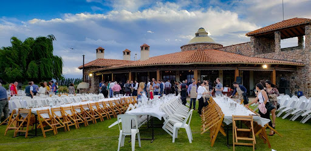
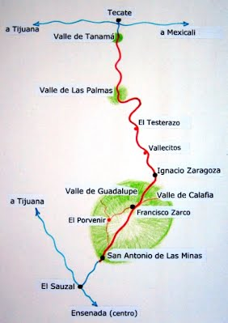
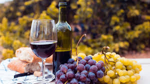

|  | Ofrecemos servicios completos de recorridos para
grupos, así mismo tenemos la capacidad de llevar a cabo cualquier evento, grande o pequeño.
Entendemos sus necesidades y proporcionaremos lo necesario para satisfacer los criterios más
exigentes de todos, tanto el aspecto como el sabor. No dude en ponerse en contacto con
nosotros. |
|||
|  | Aunque está situado a poco más de 30 kilómetros al sur de Ensenada,parece que el tiempo se detiene en el Rancho Delgado. Aquí en el hogar de MD Vinos, la vida se vive un sorbo a la vez. Al salir de la carretera Transpeninsular en la desviación al Ejido Uruapan,hay que tomar otros cinco kilómetros de camino agreste, pero todo se recompensa con un paisaje rural precioso que uno encuentra en pleno corazón del Valle de La Grulla. |
|||

Contáctanos Vía Telefónica
Oficina: (646)154-09-69 y/o Celular: (646)117-16-20 |
Reservaciones: Eduardo Delgado Albo mdvinosbc@hotmail.com |
|||